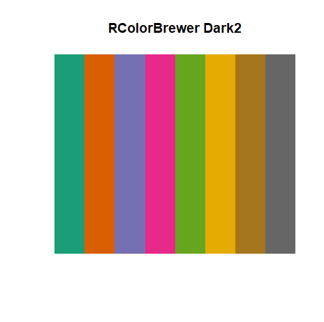
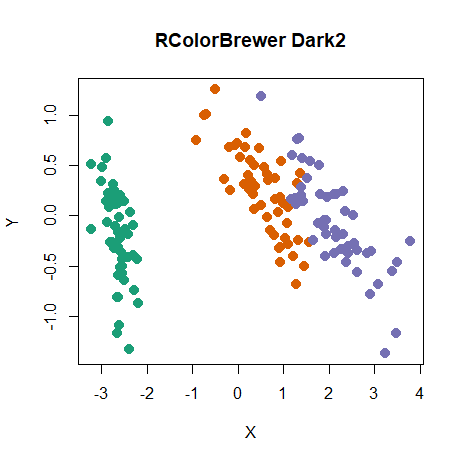
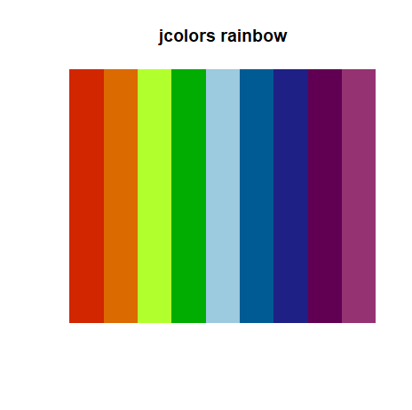
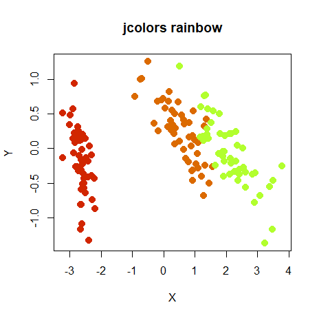
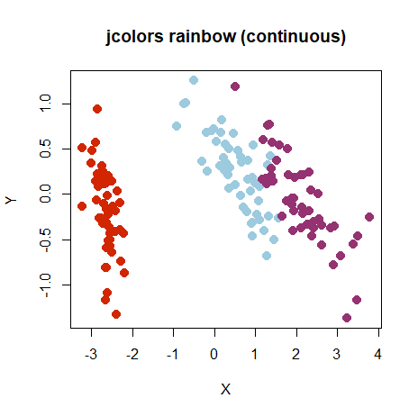
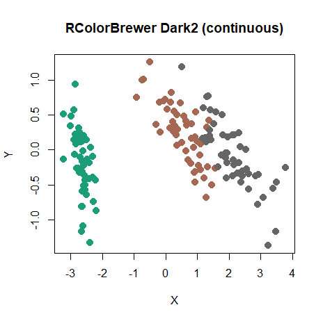

Vizier makes use of the wonderful paletteer
package which unifies the enormous number of palettes out there. To
specify a color scheme, use the color_scheme parameter,
passing one of:
- A palette function that takes an integer
nand returns a vector of colors, e.g.grDevices::rainbow. - A vector of colors making up a custom color scheme of your own
devising, e.g.
c('red', 'green', 'blue'). There must be at least two colors in the list. - The name of a color scheme provided by
paletteer, in the form"package::palette". For a list of the many, many palettes supported, see paletteer’s github page. Some examples include"dutchmasters::milkmaid","cartography::green.pal","viridis::inferno","RColorBrewer::Dark2".viziermakes no distinction between the continuous, fixed-width or dynamic palette classification used bypaletteer.
For categories, a fully named color vector is a value-to-color mapping. This is useful when subsets or reordered factor levels should retain the same colors:
pca_iris <- stats::prcomp(iris[, -5], retx = TRUE, rank. = 2)
species_colors <- c(setosa = "#E69F00", versicolor = "#56B4E9", virginica = "#009E73")
embed_plot(pca_iris$x, iris$Species, color_scheme = species_colors)Extra names are ignored, but every observed category must have a
color. An unnamed vector remains a positional palette. The
rev argument reverses a generated or named category palette
before values are mapped; it does not reorder explicit per-observation
colors supplied with colors.
Palette Interpolation
If the color scheme you select has a maximum number of colors, and
vizier needs to use more than those that are available,
then it will interpolate among the maximum number of colors to create
the desired number. This may lead to results where different categories
are hard to distinguish from each other. If you set
verbose = TRUE, then if interpolation is required, a
message will be logged to console to this effect. paletteer
has information on the number of colors available in each palette.
Discrete Palettes with continuous Type
For discrete palettes, if you ask for fewer colors than the full
range, you will only get the first few colors from the palette. For some
palettes this works fine. For example, here is the Dark2
palette from RColorBrewer:

If you use this palette to color the iris PCA:

The three colors from the lefthand side of the swatch are used to color the species.
However, some discrete palettes have an ordering to them, e.g. they
go from red to blue via yellow. Here’s rainbow from the
jcolors package:

The PCA embedding now looks like:

If you would prefer to use a fuller extent of the palette, you can
treat the palette as continuous, by appending ::c to the
name of the color scheme, e.g. "jcolors::rainbow::c". Now
the result is:

where the colors come from the left-most, right-most and center positions on the swatch.
The downside to treating these palettes as continuous is that there
is no guarantee that the interpolation will result in colors that
actually come from the palette. In fact, they probably won’t. We just
got lucky in the above example, because interpolating between colors was
not required. For colors which show a natural progression like
jcolors::rainbow, results should still be ok. However, for
palettes like RColorBrewer::Dark2, interpolation may not
turn out so well. The iris PCA with the “continuous” version of Dark2,
i.e. specifying RColorBrewer::Dark2::c results in:

The left cluster uses the green from the left-hand side of the Dark2 swatch, and the right cluster is colored in the gray color from the right-hand side. But the middle cluster isn’t any of the other colors and mixes rather murkily with the gray cluster. It doesn’t make sense to use interpolation in this case.
In summary, avoid interpolation of discrete color schemes if you can,
and definitely do avoid for those like
RColorBrewer::Dark2 which don’t work on a color scale.